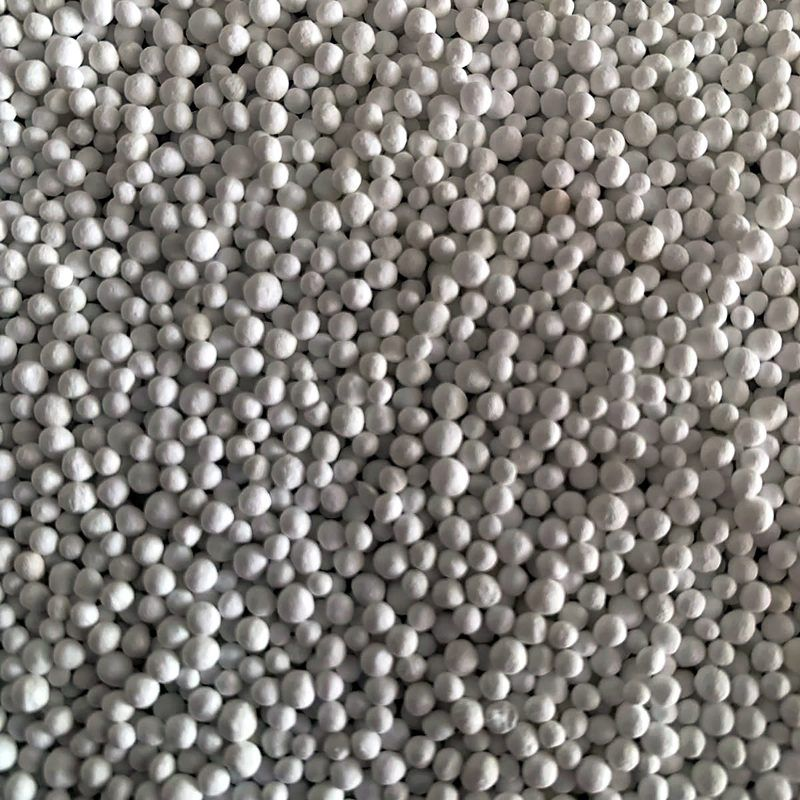

O que é alumina ativada
A alumina ativada é um óxido de alumínio (Al₂O₃) obtido pela desidratação controlada do hidróxido de alumínio. O processo retira água da estrutura cristalina sem colapsá-la e deixa um sólido com porosidade muito alta, formado principalmente pela fase gama (γ-Al₂O₃), que tem a superfície ativa.
Na prática, cada grama do material tem centenas de metros quadrados de superfície interna. É ali que a água e outros compostos polares ficam retidos.
- Não amolece, não incha e não se desfaz em contato com líquidos.
- Inerte, inodora, branca a esbranquiçada.
- Regenerável por calor ou por variação de pressão.

Foto real do produto em estoque.
Como funciona: adsorção física e reversível
O gás ou líquido úmido atravessa o leito de esferas. As moléculas de água, fortemente polares, aderem à superfície dos poros e ficam retidas; o fluido sai seco. Quando o leito satura, a regeneração libera a água e o material volta a trabalhar.
7 x 14 mesh ou 2,0 a 3,0 mm?
“7 x 14 mesh” significa que o grão passa na peneira de 7 mesh e fica retido na de 14 mesh. O tamanho do grão define o equilíbrio entre velocidade de adsorção e perda de carga: grãos menores secam mais rápido, mas oferecem mais resistência ao fluxo.
| Peneira | Série Tyler | Série ASTM/US |
|---|---|---|
| 7 mesh (passa) | 2,79 mm | 2,80 mm |
| 14 mesh (retém) | 1,17 mm | 1,40 mm |
| Faixa 7 x 14 | ≈ 1,2 a 2,8 mm | ≈ 1,4 a 2,8 mm |
Qual escolher
| Granulometria | Cinética | Perda de carga | Uso preferencial |
|---|---|---|---|
| 7 x 14 mesh | Mais rápida | Maior | Desidratação de líquidos, colunas, cartuchos, leitos compactos e laboratório |
| 2,0 a 3,0 mm | Rápida | Moderada | Secadores compactos de ar e gases, filtros de linha e reposição de leitos que usam esferas de ~2 a 3 mm |
Vai repor um leito existente? Repita a granulometria indicada pelo fabricante do secador. Grandes leitos de fase vapor costumam usar esferas maiores (3 a 6 mm), que não fazem parte do nosso estoque atual. Consulte-nos.
Especificação do produto em estoque
| Produto | Alumina ativada (óxido de alumínio, Al₂O₃) |
|---|---|
| Origem | Importado |
| Condição | Novo, em embalagem original |
| Forma | Grânulos esféricos brancos |
| Granulometrias | 7 x 14 mesh (≈ 1,2 a 2,8 mm) 2,0 a 3,0 mm |
| Função | Secagem (dessecante) e adsorção |
| Embalagens | 1 kg5 kg25 kg50 kg200 kg1.000 kg |
| Segurança | Não classificado como perigoso (ABNT NBR 14725). Não classificado como perigoso para transporte. |
| Documentação | Ficha com Dados de Segurança (FDS) — ABNT NBR 14725 |
Valores típicos da classe (grau de secagem, 7 x 14 mesh)
Faixas características de aluminas ativadas de grau de secagem, compiladas de fichas técnicas públicas de produtos equivalentes. Servem para pré-dimensionamento e comparação.
| Propriedade | Faixa típica | Para que serve |
|---|---|---|
| Área superficial (BET) | 325 a 360 m²/g | Indica a capacidade máxima de adsorção |
| Volume de poros | 0,45 a 0,50 cm³/g | Espaço disponível para reter a água |
| Densidade aparente compactada | 0,70 a 0,80 g/cm³ | Converte massa em volume de leito |
| Resistência ao esmagamento | ≈ 5 kgf por esfera | Suporta o peso do leito e a ciclagem |
| Perda por abrasão | ≤ 0,1 % | Indica a geração de pó (finos) |
| Al₂O₃ | 92 a 94 % | Constituinte principal |
| Capacidade estática de água | 20 a 22 % (25 °C, 60 % UR) | Valor de catálogo, para comparar produtos |
| Capacidade dinâmica de trabalho | 10 a 15 % | Valor a usar no dimensionamento |
| Ponto de orvalho atingível | −40 °C a −70 °C | Depende de pressão, ciclo, purga e regeneração |
Valores de referência, não especificação do lote. Para projeto ou proposta técnica formal, solicite o certificado de análise do lote junto com a cotação.
Regeneração e ciclos de operação
Como a adsorção é física, o leito saturado pode ser regenerado muitas vezes. Há dois métodos usuais:
Por temperatura (TSA)
Aquecimento do leito, tipicamente entre 180 °C e 250 °C em secadores de ar, com purga de gás seco em contracorrente e resfriamento antes de voltar ao serviço.
Por pressão (PSA)
Usado em secadores sem aquecimento (heatless): o leito é despressurizado e purgado com parte do ar já seco, em geral 10 % a 20 % da vazão tratada.
| Etapa (TSA) | Condição típica | Cuidado |
|---|---|---|
| Despressurização | Gradual | Despressurização brusca causa atrito e gera pó |
| Aquecimento | 180 a 250 °C | Acima de 320 °C há perda permanente de área superficial |
| Patamar | 2 a 4 h, conforme a carga | Patamar curto deixa capacidade residual baixa |
| Purga | Gás seco em contracorrente | Sem purga, a água volta a ser adsorvida |
| Resfriamento | Até perto da temperatura de operação | Entrar em serviço quente reduz muito a capacidade |
Calculadora de leito para ar comprimido
Estime quanta alumina ativada um secador precisa para o tempo de ciclo desejado. A conta parte do ar saturado após o resfriador, adota capacidade dinâmica de 12 % e soma 20 % de margem para envelhecimento.
Estimativa de ordem de grandeza. Não substitui o dimensionamento do fabricante do equipamento ou de profissional habilitado.
Boas práticas e causas de falha
Na instalação
- Mantenha a embalagem lacrada até o carregamento.
- Carregue devagar e de forma uniforme, sem queda livre alta.
- Use telas e esferas cerâmicas inertes na entrada e na saída, quando aplicável.
- Pressurize o leito de forma gradual na partida.
- Monitore ponto de orvalho e perda de carga.
O que encurta a vida do leito
- Água líquida: libera calor e pode fragmentar as esferas. Use separador e drenos.
- Óleo do compressor: bloqueia os poros de forma irreversível. Use filtro coalescente.
- Regeneração acima de 320 °C: perda permanente de capacidade.
- Ácidos ou bases fortes: atacam a estrutura e geram pó.
- Fluxo ascendente rápido na adsorção: fluidiza o leito e gera finos.
Segurança, manuseio e armazenamento
Conforme a FDS do produto (ABNT NBR 14725), a alumina ativada não é classificada como perigosa nem como perigosa para transporte. O cuidado principal é com a poeira gerada no manuseio.
- Proteção: óculos de segurança, luvas e máscara PFF2 ao carregar ou peneirar.
- Material saturado e quente: use luvas térmicas; a adsorção de água libera calor.
- Armazenagem: local seco, coberto e ventilado, com a embalagem lacrada.
- Derramamento: recolha mecanicamente, sem ar comprimido, evitando levantar pó.
- Descarte: caracterize o material usado conforme a ABNT NBR 10004, pois depende do que foi adsorvido.
Perguntas frequentes
O que é alumina ativada?
É óxido de alumínio (Al₂O₃) altamente poroso, produzido pela desidratação controlada do hidróxido de alumínio. Os poros têm enorme área interna e retêm moléculas de água e outros compostos polares por adsorção física, por isso o material funciona como dessecante e adsorvente.
Qual granulometria devo escolher: 7 x 14 mesh ou 2,0 a 3,0 mm?
Grãos menores (7 x 14 mesh) secam mais rápido e são indicados para líquidos, colunas e leitos compactos, mas geram mais perda de carga. A faixa de 2,0 a 3,0 mm é um pouco maior e equilibra cinética e perda de carga em secadores compactos de ar e gases. Se o seu equipamento já usa alumina, repita a granulometria do fabricante. Na dúvida, envie os dados do equipamento que indicamos a opção adequada.
A alumina ativada pode ser reutilizada?
Sim. Como a adsorção é física e reversível, o material saturado pode ser regenerado por aquecimento (tipicamente entre 180 °C e 250 °C em secadores de ar) ou por variação de pressão em secadores sem aquecimento. Evite passar de 320 °C, que reduz de forma permanente a capacidade.
Quanto de alumina eu preciso?
Depende da quantidade de água a remover por ciclo, que vem da vazão, da pressão, da temperatura de entrada e do tempo entre regenerações. A nossa calculadora dá uma estimativa inicial; para projeto, consulte o fabricante do equipamento ou um profissional habilitado.
Qual é a quantidade mínima de compra?
1 kg. Pequenas quantidades podem ser compradas direto no Mercado Livre, com nota fiscal. Para 5 kg ou mais, peça uma cotação: atendemos de 5 kg a 1.000 kg, inclusive fornecimento recorrente.
Vocês enviam para todo o Brasil?
Sim. Informe a cidade e o estado de entrega na cotação para recebermos o frete e o prazo corretos para o seu endereço.
O produto é perigoso? Precisa de transporte especial?
Não. Conforme a FDS do produto (ABNT NBR 14725), a alumina ativada não é classificada como perigosa nem como perigosa para transporte. A poeira pode irritar olhos e vias respiratórias: use óculos, luvas e máscara PFF2 ao carregar o leito.
Serve para tratamento de água potável?
Não ofertamos este grau para água de consumo humano. Alumina para água potável exige grau específico com certificação própria (como NSF/ANSI 61). O produto deste site é de grau industrial para secagem e adsorção.
Como armazenar depois de aberto?
A alumina ativada começa a adsorver a umidade do ar assim que a embalagem é aberta. Use todo o conteúdo de uma vez ou feche imediatamente em recipiente hermético, em local seco e coberto.